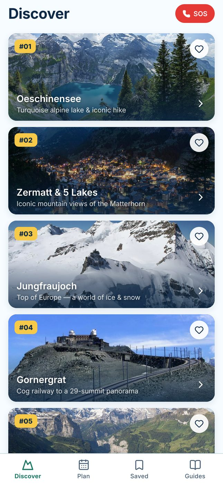
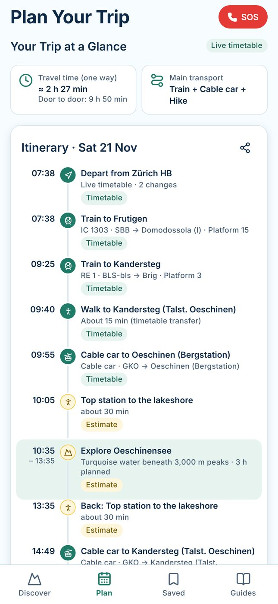
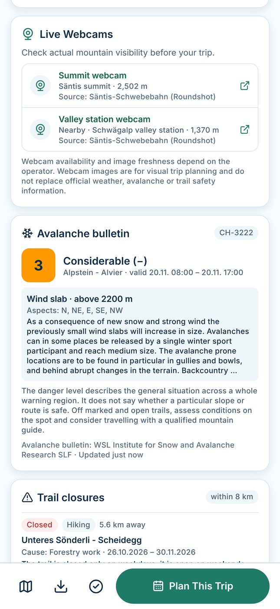
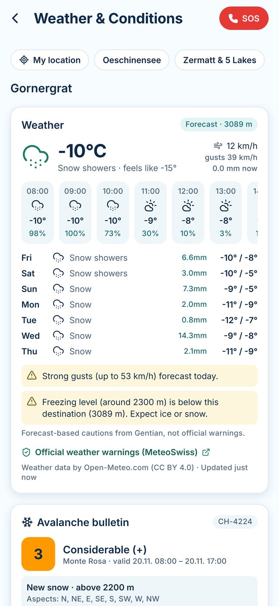
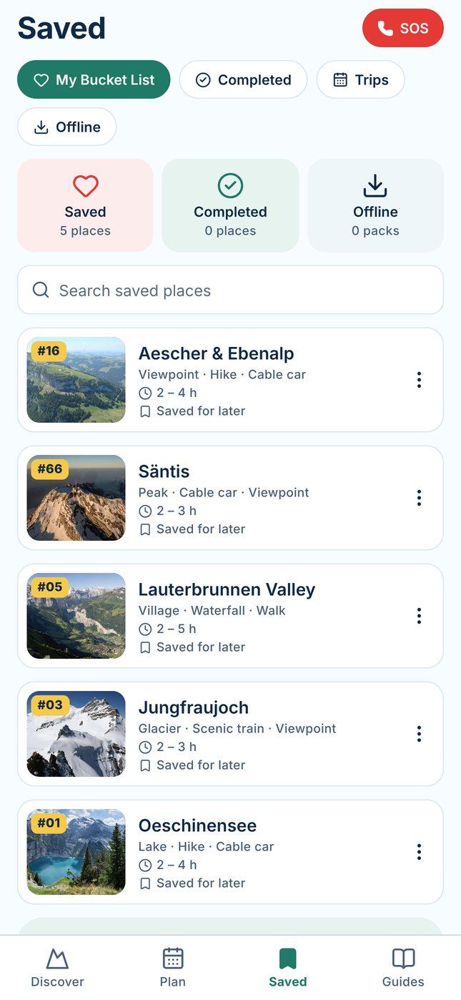
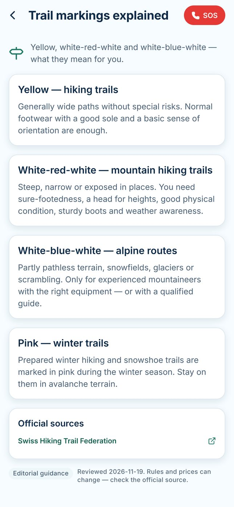
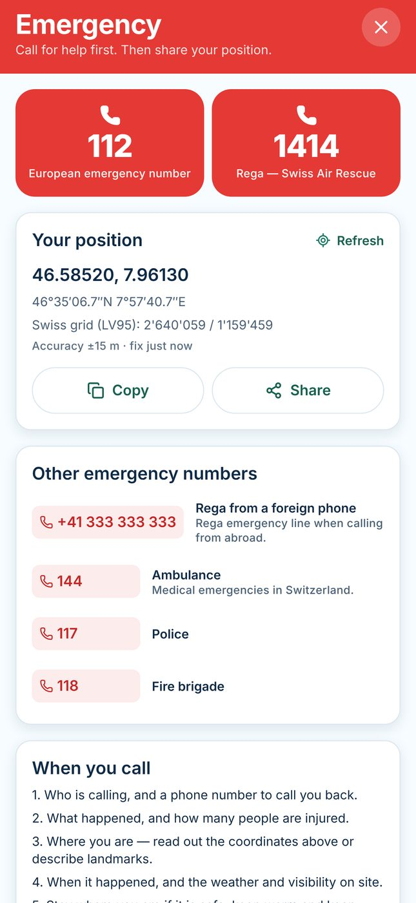

Features
Everything in the current beta, described as it works today. Screens are web renderings of the app’s interface at iPhone size.
Top 100 Must-See
An independent editorial selection — not an official ranking by any tourism organisation.
- 100 ranked Swiss Alpine destinations: lakes, peaks, villages, gorges, waterfalls, glaciers, passes and scenic railways
- Category chips, search (accents optional) and filters for region, season, difficulty, time available, accessibility and transport preference
- Coordinates, elevations and timetable stops checked against official sources; the ranking itself is an editorial opinion

Destination guides
- Overview, Highlights, Travel Info and Conditions for every destination
- How to get there step by step, best season, duration, difficulty and accessibility notes
- Family and dog suitability with its evidence level; official operator and ticket links
- Save to your bucket list, mark as completed, share, view on the map or plan the trip

Car-free trip planner
- Start from major hubs, any Swiss stop or the nearest stop to you
- Outbound and return connections from the Swiss open-data timetable, including cog railways, funiculars and cable cars where they are in the timetable
- Walking legs and time on site are clearly labelled estimates, not operator schedules
- Notes for seasons, weather, families and dogs; save, share, edit and refresh trips

Maps & GPS
- swisstopo topographic, grey and aerial maps with hiking, mountain-bike and cycling layers
- Your position (when you allow it), destination pins, GPX import and export, route drawing
- swisstopo elevation profiles and basic route following (distance and deviation, not turn-by-turn)
- Map tiles need an internet connection; they are not stored for offline use

Live webcams
- Links to official operator and tourism webcams for many Top 100 destinations — not all of them
- Summit and valley cameras where available, so you can compare fog and visibility
- Pages open in your browser after a tap; Gentian does not show, store or check camera images
- In the beta, some links are marked “Unverified view” while they are being confirmed

Mountain conditions
- Forecast at the destination’s altitude with simple forecast-based cautions
- The SLF avalanche bulletin for the destination’s warning region, with a link to the full bulletin
- Official trail closures and diversions on the SwitzerlandMobility network
- A link to official MeteoSwiss warnings — Gentian’s cautions are not official warnings

Saved & offline
- Bucket list, completed places and saved trips, stored only on your device
- Destination guides and photos are built into the app
- Optional offline packs keep a dated snapshot of conditions; live data and maps need a connection

Practical guides
- Getting around without a car, travel passes, lift seasons, trail markings and mountain weather
- Travelling with dogs or children, nature rules, altitude and sun, rescue and insurance
- Each guide links to official sources; rules and prices can change

SOS
- 112 and Rega 1414 one tap away (with confirmation), plus 144, 117, 118 and Rega from abroad
- Your coordinates in WGS84, degrees-minutes-seconds and Swiss LV95, ready to copy or share
- Guidance on what to say when you call
- Calls use your phone’s network; Gentian does not contact rescue services automatically

Beta status. Gentian is in closed TestFlight testing. Features, availability and pricing may change before public release.